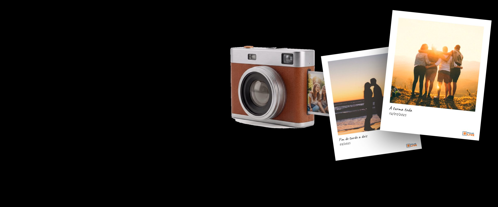
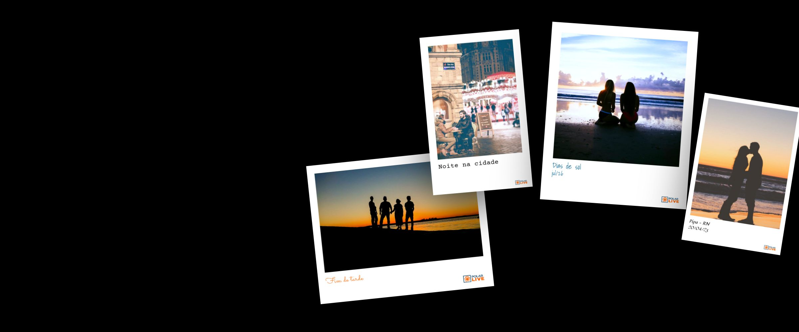
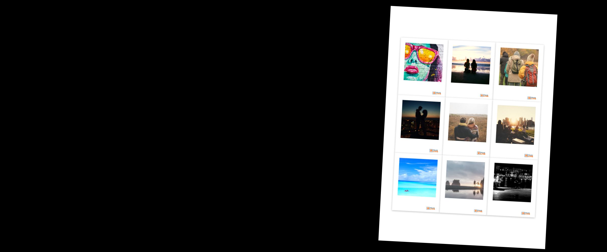

Não deixe para depois
Que foto você vai querer segurar daqui a dez anos?
Escolha algumas hoje. Um dia, segurar essas fotos vai significar ainda mais.
Como imprimir em casa
Não deixe para depois
Escolha algumas hoje. Um dia, segurar essas fotos vai significar ainda mais.
Como imprimir em casa
Pronto para usar
Praia, cidade, viagem: fonte, formato e legenda já combinados. É só trocar as fotos.
Ver sugestões de design
Para compartilhar
Em breve: monte uma colagem com suas polaroids e compartilhe em imagem, sem gastar folha.
Ver colagens
Suas fotos entram aqui
Escolha as fotos do aparelho, arraste para a ordem e veja cada polaroid se montando.
Adicionar fotosDo seu jeito
A prévia mostra exatamente o que sai no papel. O PDF sai em tamanho real, para imprimir em casa.
Ver o editorNenhum projeto ainda
Escolha um modelo abaixo ou toque em Começar agora.
Modelos prontos: formato, fonte e estilo da legenda já combinados. Troque o que quiser depois.
As mesmas polaroids, em imagem para compartilhar, sem gastar folha. Em preparação: chegam na próxima versão. Para imprimir, a Colagem já está no editor de folhas.
Processamento 100% local. Suas fotos não sobem para nenhum servidor.